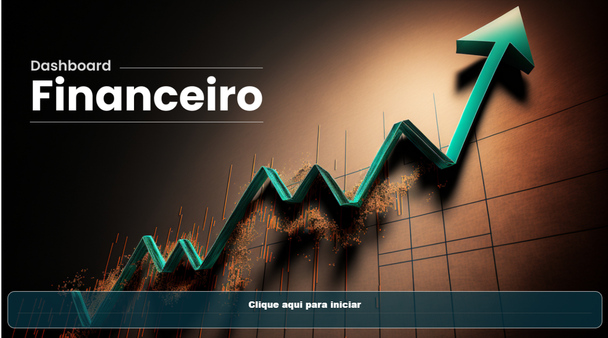
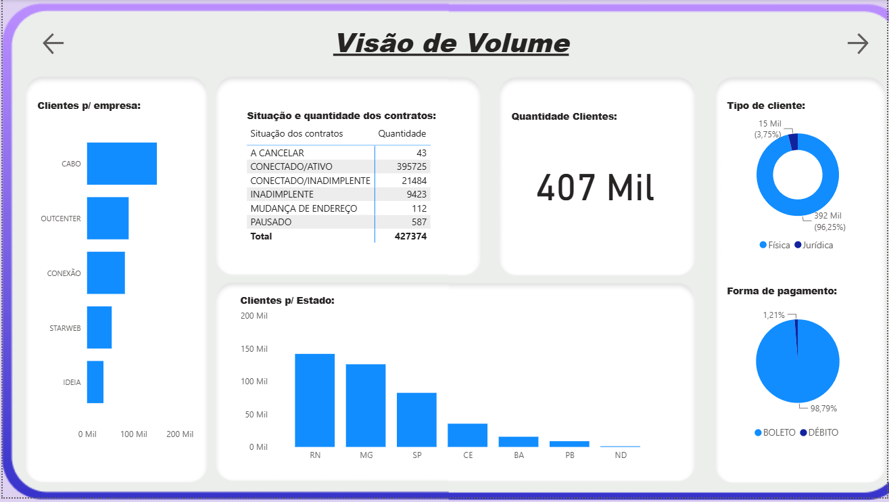
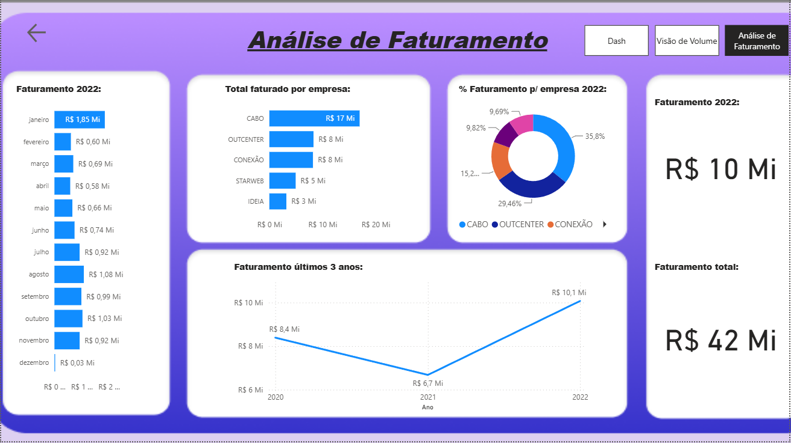

Dashboard de Volume e Faturamento
Power BI · Tabela Dinâmica · Comparativos por Período
O problema
Acompanhar volume operacional e faturamento lado a lado, permitindo comparar períodos sem precisar cruzar planilhas manualmente.
A lógica por trás
O relatório foi separado em duas páginas com propósitos diferentes:
- Volume — cards de indicadores, gráfico de colunas e uma tabela dinâmica para leitura detalhada linha a linha.
- Faturamento — gráfico de rosca e comparativos entre períodos, para leitura de proporção e evolução.
A ideia foi manter cada página com uma pergunta clara: a de Volume responde "quanto se moveu", a de Faturamento responde "quanto isso representou em receita".
Medidas DAX
Diferente do Comercial, aqui a lógica de negócio está concentrada no próprio Power BI — o modelo usa medidas mais elaboradas, com filtros de contexto e janelas de tempo:
- Qtd Cliente —
DISTINCTCOUNT(codigo_cliente). Conta clientes únicos, sem duplicar. - Qtd Situação Contratos —
COUNT(situacao_contrato). Conta registros por situação do contrato (ativo, cancelado etc). - Total Faturado —
CALCULATE(SUM(valor_contrato)). Soma total faturado em contratos. - TotalPago — soma o valor dos documentos apenas quando a data de pagamento não está vazia, isolando o que foi efetivamente pago do que só foi faturado.
- Total Faturado 2022 — mesma soma de contratos, filtrada para o ano de 2022 com
YEAR(data_venda) = 2022. - Ticket Médio —
AVERAGE(valor_contrato). Valor médio por contrato. - % Faturamento p/ empresa 2022 — divide o faturado de 2022 no contexto atual pelo faturado de 2022 da empresa toda, usando
ALL()para remover os filtros e obter o total geral como base de comparação. - UltimaDataVenda —
MAX(data_venda). Data da venda mais recente registrada. - Faturamento Últimos Meses — soma o faturamento numa janela móvel de 12 meses, usando
EOMONTHpara calcular a data de corte a partir da venda mais recente.
Print do relatório


